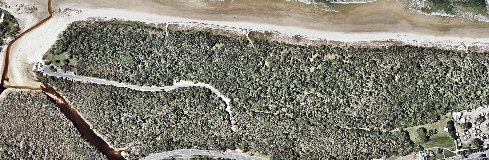
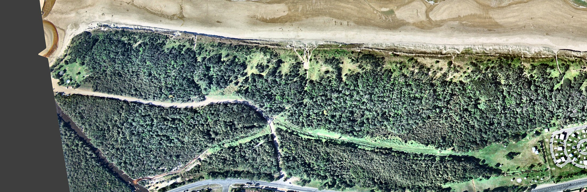
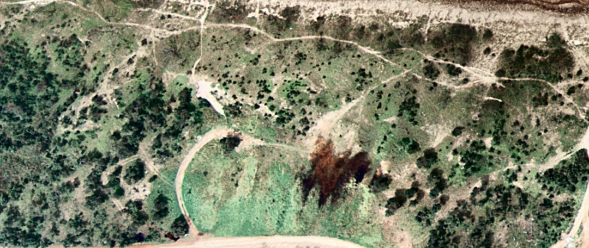
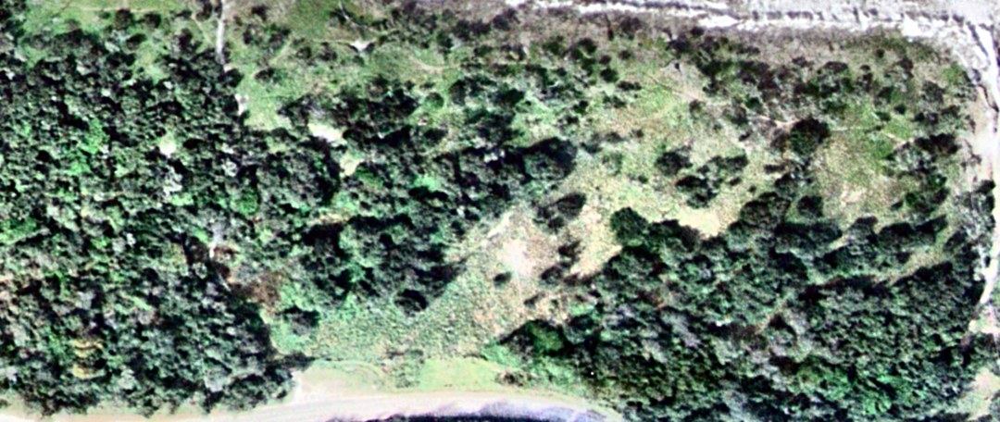
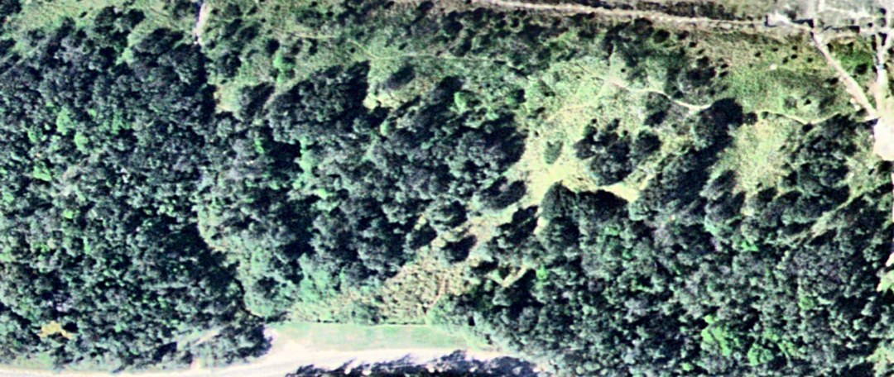
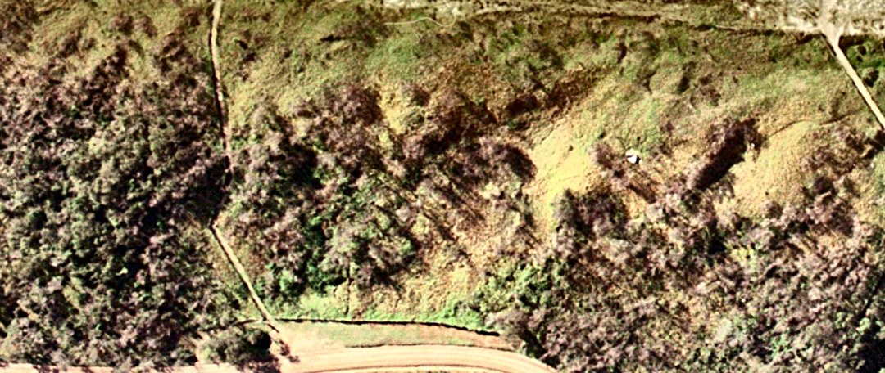
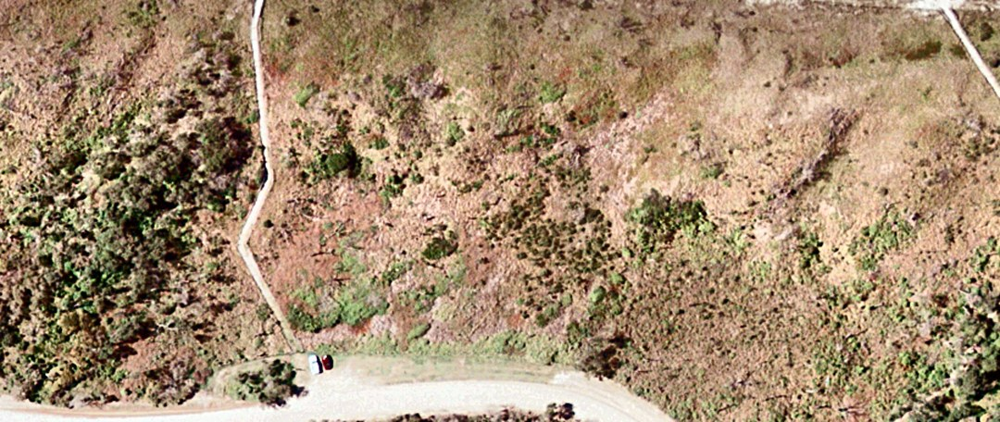
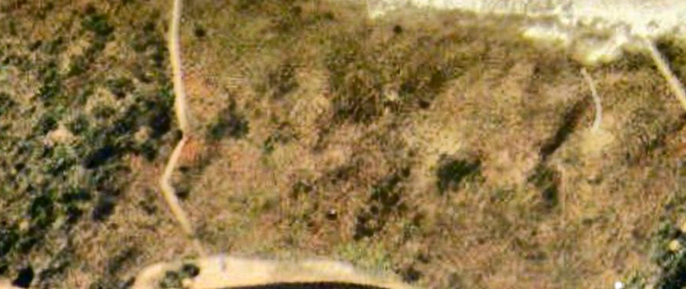
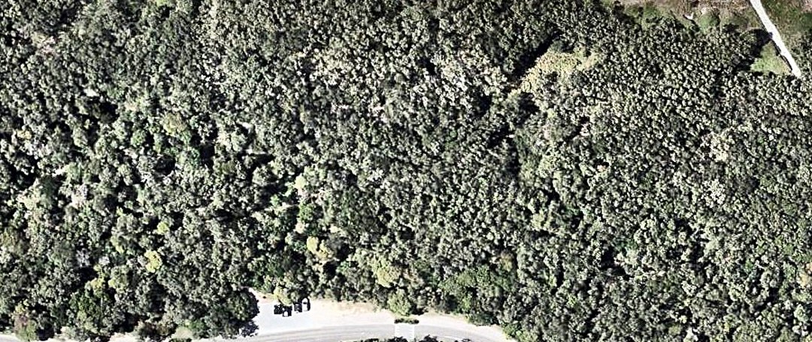

An eco-history in images, revisited
The seven aerial photographs of the Stumers Creek weeding patch have been lined up on one grid, colour-balanced, contrast-stretched and given a false-colour treatment, and the original commentary has been checked against the result. Most of it holds. The 1988 and 1994 readings change, the 2002 reading turns out to be more than that photo can carry, and the sign adds a fact the photos cannot show.
What changes in the reading
- 1988 was further along than “about half”. Closed canopy already covered about three-quarters of the land behind the fore-dune, up from scattered shrubs in 1974. Colonisation of the open dune took at most fourteen years.
- 1988 to 1994 was thickening, not spreading. Canopy extent is the same within error; the canopy is denser and the glades smaller.
- The fire is bracketed and its edge is mapped. It burnt the north block between the 1994 and 1996 photos and stopped at beach track 2. In 1996 the scorched trees were still standing; by 1999 they were gone.
- The recovery was assisted. The sign records 2,800 trees planted in the burnt dune in 2000 and 2001. The 2022 canopy in the north block is partly that planting.
The original conclusion stands: bush regeneration works and takes time. The photos put rough numbers on it. Open dune to closed canopy took under fourteen years the first time and no more than about twenty the second, and one fire undid it in between. That is two resets in fifty years, which fits the original page's doubt that this dune ever reaches a stable end state.
Share of each block classed as live woody canopy at each photo date. Lines only join the photo dates; nothing is known about the years between. Treat differences under about ten points as noise. Block outlines are on the map below, and the full breakdown is in the table.
Orientation
On a narrow screen the wide images scroll sideways.
Every image on this page is on the same grid as the 2022 photo: ocean at the top (east), north to the left. Stumers Creek is the northern boundary and the Council caravan park the southern one. The minor road from David Low Way and the foot track to the caravan park form the inland edge.

The 2022 photo with the names used in the text. The dashed outlines are the two blocks used for the cover figures. They are the parts of the patch that all seven photos cover, and they stop short of the frontal dune.
The sign

The sign is evidence in its own right, and it changes how the later photos should be read. It says that “a number of devastating fires” went through in the previous eight years, which puts them between about 1993 and 2001. It says the community planted 2,200 trees in the dunal area “on the left” on 29 July 2000, and that Coolum State Primary School planted 600 more “on the right” on 5 November 2001. The species were horsetail she-oak, coast banksia and pandanus. “On the left” is the northern half of the patch.
So the photos and the sign agree on the fire, and the sign adds two things the photos cannot show: there was more than one fire, and the burnt ground was replanted.
Compare years on one grid
Because the photos are aligned, switching year keeps every road, track and tree line in place and only the vegetation changes. Pick a treatment, then step through the years.

- Woody canopy (live)
- Low green cover
- Dry, dead or burnt
- Bare sand / track
- Dark & smooth (water, wet heath)
- No photo coverage
Year by year
Each entry shows the enhanced photo, the original reading in a grey box, and what the processed images support.
1974 Open dune, shrubs and vehicle tracks

Same frame, other treatments: as supplied · enhanced · false colour · cover map


13% woody canopy, north block16% woody canopy, south block
Original reading Supported, with one point narrowed
Very few mature trees. The dark green area behind the fore-dunes is swamp, or maybe burn scars. The caravan park is rudimentary or under construction. Many foot or vehicle tracks along the dunes.
Once the flat, greenish scan is balanced and stretched, the woody plants separate cleanly from the ground: they are isolated dark crowns, each with its own shadow, dotted over pale grass and sand. That is shrubs and small trees, not canopy. The cover map puts woody cover at roughly one-sixth of each block, and classes about a quarter of the north block as bare sand, most of it in a web of vehicle tracks. One wide track runs straight onto the beach where beach track 2 is today.
The dark area. It has no crown texture at all, it sits in the low ground inland of the dunes, and the enhanced image shows several sharp-edged, near-black pools of open water in and beside it. That favours wet heath or sedge swamp over a burn scar. A freshly burnt heath would look much the same in a colour photo, so the swamp reading is the better-supported one, not a certain one. Most of this area lies inland of the foot track, outside the weeding patch.
The small red-brown patch with streaky edges beside the looped vehicle track in the north block is a different thing: it looks like a small recent burn or a patch of dead vegetation.
The pale cleared ground at the right-hand edge is the caravan park site, which fits “under construction”.
1988 Closed canopy over most of the hind dune

Same frame, other treatments: as supplied · enhanced · false colour · cover map


78% woody canopy, north block72% woody canopy, south block
Original reading Canopy extent revised upward
Forest covers about half the site, with areas of grassland remaining. Not many trees along the fore-dunes. Tracks along the dunes have decreased, maybe due to better fencing.
The cover map classes about three-quarters of both blocks as woody canopy, up from about one-sixth in 1974. The blocks leave out the frontal dune, which is still grass, so “about half” is fair for the whole strip from road to beach but low for the land behind the fore-dune.
What is left open is specific: grassy glades on the hind dune either side of beach track 2, and the fore-dune itself, where the enhanced image shows scattered dark shrubs but no tree line. The 1974 vehicle-track web has gone. In its place are a formed gravel road and two foot tracks to the beach, so the “fewer tracks” reading holds.
1994 Same extent, denser canopy

Same frame, other treatments: as supplied · enhanced · false colour · cover map


71% woody canopy, north block77% woody canopy, south block
Original reading Partly revised
Tree cover has increased and has started to move closer to the fore-dunes. The caravan park has been completed.
Measured extent barely changes from 1988: the north block reads slightly lower and the south block slightly higher, and both differences are inside the noise of the method. What does change is density. Crowns are larger and darker, the canopy has closed up, and the glades around beach track 2 have shrunk. In the south block the tree line has edged toward the fore-dune. So “denser, and a little closer to the beach” is better supported than “more extensive”.
On the caravan park: the 1988 frame stops short of it, so these two photos cannot show it being completed between 1988 and 1994. The 1974 frame does reach it and shows cleared ground.
1996 After the fire: scorched trees still standing

Same frame, other treatments: as supplied · enhanced · false colour · cover map


20% woody canopy, north block69% woody canopy, south block
Original reading Supported and sharpened
The northern end shows many burn scars and open areas with only grass cover. The southern half appears untouched by fire.
The north block was unburnt forest in the 1994 photo, so the fire falls between these two photos. Live woody canopy in the north block drops from about 70% to about 20%; the south block is unchanged.
Most of the burnt trees are still standing. They cast long shadows, so trunks and branches are intact, but their crowns are purplish-brown instead of green. Truly open grass is confined to the hind dune between the two beach tracks. In the false-colour version the north block is red-brown and magenta against the green of the south block.
The burn edge is sharp, and it follows beach track 2 and the diagonal foot track that runs from it to the bend in the road. The tracks acted as the fire break, which is why the south block survived.
Caution for this year: tree crowns are brownish over the whole photo, including forest west of the road that was never burnt (film, season or low sun). The cover map therefore over-calls “dry or dead” outside the two blocks. The north-versus-south contrast is the reliable signal.
1999 The burnt canopy has gone

Same frame, other treatments: as supplied · enhanced · false colour · cover map


13% woody canopy, north block71% woody canopy, south block
Original reading Supported; cause left open
The entire northern end is now largely treeless, even worse than 1996. Maybe trees killed or badly damaged by the fires in 1996 and later have died in the period to 1999.
Woody canopy in the north block is down to about 13%. The scorched trees that stood in 1996 are no longer there: no crowns and no shadows. The ground is under low, mostly dry cover with scattered green shrubs or resprouts, which the false-colour image picks out as green specks on magenta.
The sign says “a number of devastating fires” crossed the area in the eight years before it was made. A second fire between 1996 and 1999 is therefore at least as likely as slow death and collapse after the first one. The photos cannot tell these apart.
A clump of live crowns survives in the north block, west of beach track 1. It is visible in 1996, 1999 and 2002. The burn edge along beach track 2 has not moved, and the south block is intact.
2002 Possibly the first regrowth; the weakest photo

Same frame, other treatments: as supplied · enhanced · false colour · cover map


18% woody canopy, north block70% woody canopy, south block
Original reading Plausible, not demonstrated
There may be some recovery in the extreme northern part of the area, as burnt trees re-establish the leaf canopy. The centre part of the area is still bare.
The cover map reads about 18% woody canopy in the north block against 13% in 1999. That difference is within the noise, and this is the lowest-resolution photo of the set (a third of the pixel width of the others, or less, with visible JPEG blocking), so it will not carry a firm claim either way.
By eye, green shrubs are denser west of beach track 1 than in 1999, and there are more dark shrub-sized crowns between the tracks, so “maybe some recovery” is a fair reading. The 2,800 trees planted in July 2000 and November 2001 would be far too small to see.
The minor road is black here and pale in 1999, so it appears to have been sealed between the two photos.
2022 Canopy over the whole patch

Same frame, other treatments: as supplied · enhanced · false colour · cover map


98% woody canopy, north block99% woody canopy, south block
Original reading Supported
Twenty years later, the tree canopy has been re-established over almost all the area, including the fore-dunes. The track to the caravan park now has a canopy that almost hides the track.
Both blocks read about 98% woody canopy. In the north block the canopy now runs to the dune crest. A narrow grassy strip remains along the front of the south block, and there are a few small gaps on the hind dune there. The foot track to the caravan park shows only as a faint line.
The sign matters for how this is read: the north block was planted, so its recovery is assisted regeneration rather than natural regrowth alone. The photo cannot separate planted trees from self-sown ones.
One piece of ground, seven dates
The hind dune of the north block between the two beach tracks, enlarged. The road is along the bottom edge and the beach is just above the top.














1974 is shrubs on grass with a vehicle loop. 1988 and 1994 are forest closing around a glade. 1996 has the same trees standing but brown, with long shadows. In 1999 they are gone. 2002 is too soft to say much. 2022 is unbroken canopy.
What the enhancement adds
The photos are ordinary colour images saved as JPEGs, with no infrared band. Everything below works only with red, green and blue, which limits how far vegetation can be separated from its background.


The burn boundary at beach track 2 in 1999, three ways.
| Step | What it does | Did it help? |
|---|---|---|
| Alignment | Each photo is rotated, scaled and sheared onto the 2022 grid, using road centre-lines, the straight reach of the creek, building corners and beach-track ends as common points. | The largest gain. It makes the year-to-year comparison and the block figures possible. Misfit is typically 5–10 pixels, which is probably a few metres on the ground. |
| Colour balance | Each colour channel is stretched so the darkest shadow is near black and dry beach sand is near white. | Yes. It removes the yellow cast of 1996 and 2002, the blue of 1994 and the flat green of the 1974 scan, so greens can be compared between years. |
| Local contrast | Brightness contrast is stretched area by area (CLAHE), with a light sharpen. | Yes. Crowns separate from their shadows and from the ground, and tracks and tree lines become crisp. It matters most for 1974 and 1994. |
| Saturation | Colour strength raised by 30%. | A little. Green against brown reads faster. Pushing it further only amplifies film grain and JPEG blocks. |
| False colour | A decorrelation stretch: the three colour bands are rotated to their principal components, each is stretched to the same spread, and the result is rotated back. Small colour differences become large ones. | Yes, for live against dead. It is the best view of the 1996 scorch and the 1999 burn boundary. Colours are computed per photo, so the same colour does not mean the same thing in two different years, and it is not an infrared image. |
| Cover map | A classifier trained separately on each photo, from small areas picked by eye, assigns every pixel to one of five cover types using colour, brightness and texture. | Useful for putting rough numbers on canopy extent. It is only as good as the training areas, it counts crown shadow as canopy, and it is meaningless over the beach and sea. |
| Tried and dropped | Forcing road asphalt to neutral grey; a brightness, greenness and texture composite; automatic clustering without training areas. | The asphalt correction introduced purple casts. The composite showed less than the decorrelation stretch. The automatic clusters split on light and shadow rather than on cover type. |
Numbers
Percentage of each block in each cover class, from the cover maps. Woody canopy is the most reliable column. The split between “low green” and “dry, dead or burnt” depends heavily on season and film, and should not be compared between years.
| Photo | Block | Woody canopy (live) | Low green cover | Dry, dead or burnt | Bare sand / track | Dark & smooth (water, wet heath) |
|---|---|---|---|---|---|---|
| 1974 | North | 13 | 56 | 6 | 24 | 1 |
| South | 16 | 44 | 11 | 12 | 16 | |
| 1988 | North | 78 | 5 | 16 | 0 | 0 |
| South | 72 | 14 | 14 | 0 | 0 | |
| 1994 | North | 71 | 28 | 0 | 0 | 0 |
| South | 77 | 16 | 7 | 0 | 1 | |
| 1996 | North | 20 | 17 | 63 | 0 | 0 |
| South | 69 | 18 | 13 | 0 | 0 | |
| 1999 | North | 13 | 4 | 79 | 4 | 0 |
| South | 71 | 4 | 25 | 0 | 0 | |
| 2002 | North | 18 | 14 | 67 | 0 | 0 |
| South | 70 | 11 | 20 | 0 | 0 | |
| 2022 | North | 98 | 2 | 0 | 0 | 0 |
| South | 99 | 1 | 0 | 0 | 0 |
Limits and next steps
- The cover classes were trained by eye, by someone who has not walked the site. A dozen ground-checked points would firm them up or correct them.
- The alignment is a flat fit to photos that had already been cropped and rotated. It is not a survey-grade rectification, and it is weakest for 1974 and toward the frame edges.
- Only the year of each photo is known here. Season, tide and sun angle all differ and all affect colour.
- There are no photos between 1974 and 1988 or between 2002 and 2022, which are the two periods when the canopy formed. More dates from the Queensland aerial archive would show how fast it happened.
- Landsat has covered this coast since the late 1980s with an infrared band. The patch is only a small cluster of 30-metre Landsat pixels, but that should be enough for a burn index to date each fire far more closely than these photos can, and to trace the regrowth curve.
- Starting again from the georeferenced, uncropped archive images would remove the alignment step and its error altogether.